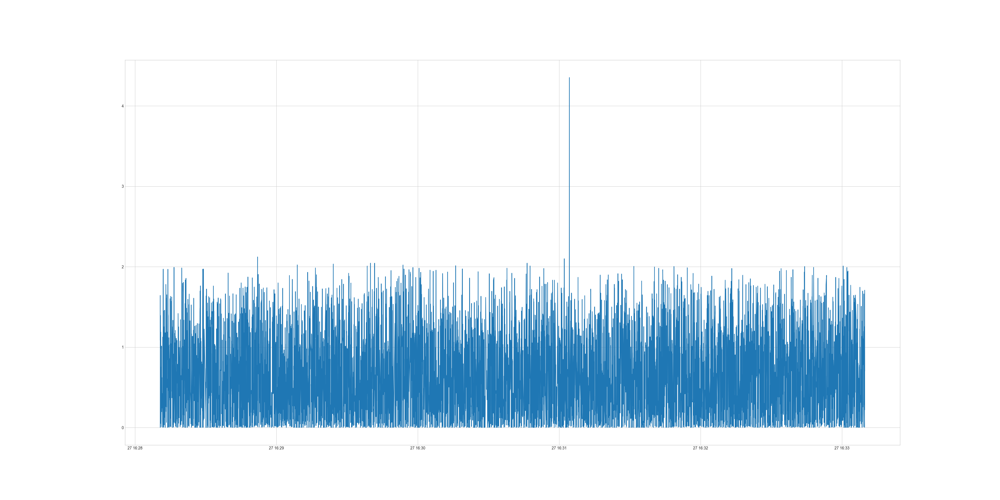

How to analyze Network Packets by Python
Posted on Tue 10 January 2023 in Journal
| Abstract | How to analyze Network Packets by Python |
|---|---|
| Authors | Walter Fan |
| Category | learning note |
| Status | v1.0 |
| Updated | 2023-01-10 |
| License | CC-BY-NC-ND 4.0 |
How to analyze network packets
一般我们通过 tcpdump 或者 wireshark 来捕获网络包为 .pcap 或者 .pcapng 文件
tcpdump -G 60 -W 1 -w /tmp/test.pcap
而分析 pcap 文件可以用 wireshark 或其命令行工具 tshark， 例如
tshark -P -V -x -2 -T text -j rtp -c 3 -r /tmp/test.pcap
具体用法参见 tshark –help
例如将 pcapng 文件中的前 100 包按以下条件过滤出来，并导出为 json 文件
tshark -r 2022-03-30-cc.pcapng -2 -Y "ip.addr == 10.140.202.120 and rtp.p_type == 123" -V -c 100 -T json >
packet_sample.json"
输出结果如下
//省略 1 ~ 4 层的信息： 1）frame, 2）eth, 3）ip, 4）udp
"rtp": {
"rtp.setup": "",
"rtp.setup_tree": {
"rtp.setup-frame": "1",
"rtp.setup-method": "HEUR RTP"
},
"rtp.version": "2",
"rtp.padding": "0",
"rtp.ext": "1",
"rtp.cc": "0",
"rtp.marker": "0",
"rtp.p_type": "123",
"rtp.seq": "8637",
"rtp.extseq": "74173",
"rtp.timestamp": "2709737133",
"rtp.ssrc": "0xe19bcceb",
"rtp.ext.profile": "0x0000bede",
"rtp.ext.len": "2",
"rtp.hdr_exts": {
"RFC 5285 Header Extension (One-Byte Header)": {
"rtp.ext.rfc5285.id": "2",
"rtp.ext.rfc5285.len": "3",
"rtp.ext.rfc5285.data": "e0:9c:ac"
},
"RFC 5285 Header Extension (One-Byte Header)": {
"rtp.ext.rfc5285.id": "3",
"rtp.ext.rfc5285.len": "2",
"rtp.ext.rfc5285.data": "c4:70"
}
},
"rtp.payload": "92:00:60:90:80:c6:67:..."
}
如果我们需要进一步地进行自动化分析，pyshark 是一个不错的库, 用 python 就可以读取分析网络包
基本用法
- 从抓包文件中读取网络包
>>> import pyshark
>>> cap = pyshark.FileCapture('/tmp/mycapture.cap')
>>> cap
<FileCapture /tmp/mycapture.cap (589 packets)>
>>> print cap[0]
Packet (Length: 698)
Layer ETH:
Destination: BLANKED
Source: BLANKED
Type: IP (0x0800)
Layer IP:
Version: 4
Header Length: 20 bytes
Differentiated Services Field: 0x00 (DSCP 0x00: Default; ECN: 0x00: Not-ECT (Not ECN-Capable Transport))
Total Length: 684
Identification: 0x254f (9551)
Flags: 0x00
Fragment offset: 0
Time to live: 1
Protocol: UDP (17)
Header checksum: 0xe148 [correct]
Source: BLANKED
Destination: BLANKED
...
- 从一个网络接口中读取网络包
>>> capture = pyshark.LiveCapture(interface='eth0')
>>> capture.sniff(timeout=50)
>>> capture
<LiveCapture (5 packets)>
>>> capture[3]
<UDP/HTTP Packet>
for packet in capture.sniff_continuously(packet_count=5):
print 'Just arrived:', packet
- 使用环形缓冲区从一个网络接口中读取网络包
>>> capture = pyshark.LiveRingCapture(interface='eth0')
>>> capture.sniff(timeout=50)
>>> capture
<LiveCapture (5 packets)>
>>> capture[3]
<UDP/HTTP Packet>
for packet in capture.sniff_continuously(packet_count=5):
print 'Just arrived:', packet
- 从一个远程网络接口读取网络包
>>> capture = pyshark.RemoteCapture('192.168.1.101', 'eth0')
>>> capture.sniff(timeout=50)
>>> capture
更多用法参见 https://github.com/KimiNewt/pyshark
我在分析 WebRTC 中的网络梯度延迟 OWDV(One Way Delay Variation), 也用它写了一小段脚本， 性价比极高
#!/usr/bin/env python3
import pyshark
import pandas as pd
import matplotlib
import matplotlib.pyplot as plt
import argparse
from datetime import datetime
"""
abs_send_time_24 = (ntp_timestamp_64 >> 14) & 0x00ffffff ;
NTP timestamp is the number of seconds since the epoch, in 32.32 bit fixed point format.
It is 24 bit 6.18 fixed point, yielding 64s wraparound and 3.8us resolution
int kAbsSendTimeFraction = 18;
int kAbsSendTimeInterArrivalUpshift = 8;
int kInterArrivalShift = RTPHeaderExtension::kAbsSendTimeFraction + kAbsSendTimeInterArrivalUpshift;
constexpr double kTimestampToMs = 1000.0 / static_cast<double>(1 << kInterArrivalShift);
uint32_t timestamp = send_time_24bits << kAbsSendTimeInterArrivalUpshift;
Timestamp send_time = Timestamp::Millis(static_cast<int64_t>(timestamp) * kTimestampToMs);
"""
# fraction part has 18 bits
kAbsSendTimeFraction = 18
kAbsSendTimeInterArrivalUpshift = 8
# after upshfit 8 bits, there are 26 bits for fraction
kInterArrivalShift = kAbsSendTimeFraction + kAbsSendTimeInterArrivalUpshift
kTimestampToMs = 1000.0 / (1 << kInterArrivalShift)
def send_time_to_ms(send_time_24bits):
timestamp = send_time_24bits << kAbsSendTimeInterArrivalUpshift
send_time = timestamp * kTimestampToMs
return send_time
class RtpAnalyzer:
def __init__(self, input_file, output_file):
self._pcap_file = input_file
self._csv_file = output_file
def read_pcap(self, display_filter, count):
dataList = []
packets = pyshark.FileCapture(self._pcap_file, display_filter=display_filter)
i = 0
for packet in packets:
dataItem = {}
dataItem["arrival_time"] = datetime.fromtimestamp(float(packet.frame_info.time_epoch))
dataItem["arrival_time_ms"] = float(packet.frame_info.time_epoch) * 1000
dataItem["rtp_timestamp"] = int(packet.rtp.timestamp)
dataItem["extseq"] = int(packet.rtp.extseq)
dataItem["packet_size"] = int(packet.udp.length)
if int(packet.rtp.ext_rfc5285_id) == 2:
send_time_24bits = packet.rtp.ext_rfc5285_data.main_field.hex_value
dataItem["abs_send_time"] = send_time_to_ms(send_time_24bits)
dataList.append(dataItem)
i += 1
if i >= count:
break
dataFrame = pd.DataFrame(dataList)
#print(dataFrame)
return dataFrame
def calculate_delta(self, df, row_interval=1):
df["arrival_time_ms_diff"] = df["arrival_time_ms"].diff(periods=row_interval)
df["send_time_diff"] = df["abs_send_time"].diff(periods=row_interval)
df["OWDV"] = df["arrival_time_ms_diff"] - df["send_time_diff"]
df["OWDV"] = df["OWDV"].abs()
df = df[df['OWDV'] < 60]
print(df)
df.to_csv(self._csv_file)
print(df["OWDV"].describe())
print("* note: filter out OWDV if it > 60s because abs_send_time wrap around by 64s")
return df
def draw_chart(self, chart_file, df, x, y):
plt.style.use('seaborn-v0_8-whitegrid')
fig = plt.figure(figsize=(36, 18))
font = {'size': 16}
plt.plot(x, y, data=df)
#plt.show()
fig.savefig(chart_file)
plt.close()
if __name__ == '__main__':
parser = argparse.ArgumentParser()
parser.add_argument('-i', action='store', dest='input_file', help='specify input file')
parser.add_argument('-o', action='store', dest='output_file', help='specify output file')
parser.add_argument('-f', action='store', dest='filter', default="rtp", help='specify filter expression')
parser.add_argument('-c', action='store', dest='count', default=10, help='specify packet count')
args = parser.parse_args()
if not args.input_file or not args.output_file or not args.output_file.endswith(".csv"):
print("usage: ./rtp_analyze.py -i <pcap_file> -f <filter_expression>")
print('such as: ./rtp_analyze.py -i /tmp/test_owdv.pcap -o "test_owdv.csv" -f "rtp.ssrc==0x8ab92fad" -c 100000')
exit(0)
rtpAnalyzer = RtpAnalyzer(args.input_file, args.output_file)
df = rtpAnalyzer.read_pcap(args.filter, int(args.count))
if not df.empty:
df = rtpAnalyzer.calculate_delta(df)
rtpAnalyzer.draw_chart("{}.png".format(args.output_file[:-4]), df, "arrival_time", "OWDV")
上述小程序生成的图片如下

参考资料
- TShark： https://www.wireshark.org/docs/man-pages/tshark.html
- Pyshark： https://github.com/KimiNewt/pyshark
本作品采用知识共享署名-非商业性使用-禁止演绎 4.0 国际许可协议进行许可。